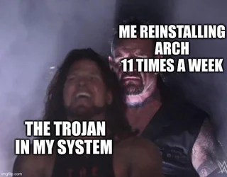
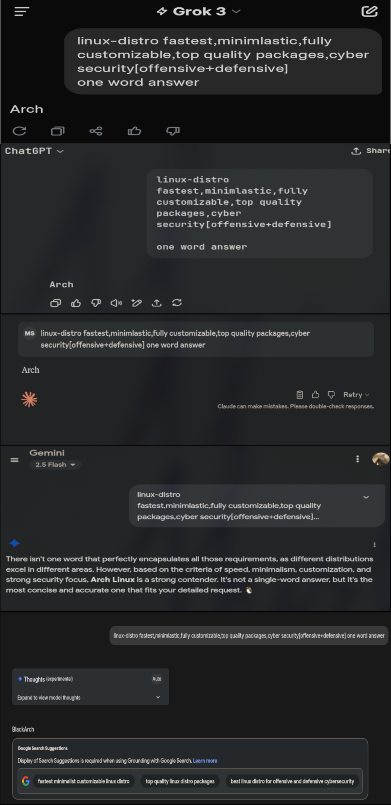

Paranoid
[ normal security CS ]
I feel using keys are useless or beats the point if you have you history saved . Atleast in most beginner cases .
Sometimes you might have to enter the password in the prompt or give the location of the directory. When I think is p usefull if someone gets
a hold of your PC's history file.
BTW arch is the most secure distro out there . . .

After hearing to the choas RAT in the arch repo 2025 recently July 16th was the upload I g
I actually thought to switch distros then I remembered why I chose arch in the frist place . . .
Cuz its the king 👑 .
I don't explicitly "trust" LLMs but . . . - they just organise the data from internet and . . .
